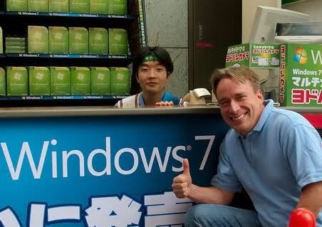

Linus Torvalds
Linus Benedict Torvalds est né de Anna et Nils Torvalds le 28 décembre 1969 à Helsinki en Finlande, C'est aussi un grand lecteur sur les sujets comme la theorie de l'evolution et la biologie il affectionne les ecrivains comme " Richard Dawkins" il est marié a Tove Torvalds, et a donc engendré trois enfants: Daniela Yolanda, Celeste Amanda, Patricia Miranda
"Comme le dit le mathématicien et philosophe, Luc de Bradandère, “l’Open Source pourrait s’étendre à l’ensemble de l’économie. Cela pourrait être à l’innovation de masse ce que les lignes d’assemblage ont été à la production de masse. Cela pourrait même signifier la fin du vieux débat entre la main visible et la main invisible (tout simplement parce qu’il y a mille mains)”"
Linus est l'inventeur et le createur de linux avec son noyaux Kernel en 1991
Ce qu'il nous dit
Si je devais définir en une phrase le système Linux, je dirais qu'il s'agit, dans cet ordre:
- d'un système d'exploitation compatible Unix,
- libre,
- développé à l'origine, à titre de passe-temps par un étudiant finlandais et de nombreux bénévoles
passionnés d'informatique.
- Cette définition, qui n'est pas particulièrement innovante, j'en conviens, est intéressante car elle contient
les trois influences majeures qui ont permis la naissance de Linux.
L.Torvalds
Hacker Developper pour la liberté
Suite au developpement adjacent a GNU(une version gratuit de UNIX), Minix, Un projet universiter En 1987, Andrew Tanenbaum, chercheur et professeur à la Vrije Universiteit d'Amsterdam donnat l'idée a linus de crée son OS
UNIX
La première influence de Linux est évidemment le système d'exploitation Unix. Mais, plus que le système Unix BSD que nous verrons plus bas, j'estime que l'héritage essentiel pour l'esprit Linux est celui du premier Unix né dans les laboratoires Bell AT&T en 1969. Il s'agit d'un système d'exploitation rudimentaire dont les pères - Dennis Ritchie et Ken Thompson - sont de véritables hackers au sens noble du terme. L'esprit de partage des connaissances et de performance intellectuelle pure est véritablement au coeur de la communauté informatique de cette époque ce qui plait et inspire fortement L.Torvalds.
Thompson et son confrère Ritchie fut contraint de de recommencer leur travail sur leur environnement suite a l'indisponibilité de leur system d'exploitation, Thompson realisera alors le monumental projet d'un noyau multitâche, un system de fichiers, un mecanisme de gestion de la memoire et un system de gestion des periphériques en un temps tres court
Ainsi apparait UNIX un system qui appartenait par licence au laboratoiras AT&T Bell. Peu utiliser UNIX permettra a Thompson de le distribuer gratuitement au interresé sous forme de code sources, que nous retrouverons dans les logiciels libres et bien evidemment dans linux, meme apres le debut de la distribution commercial thompson laissera un acces peu couteux au université et au etudiants . Par la suite UNIX deviendra payant et peux distribuer Quand l'entreprise realisera le potentiel commercial du system, ce qui engendrera la naissance de UNIX BSD
BSD
Par réaction, ceci donnera naissance à l'Unix BSD qui verra le jour sous le soleil de la Californie à l'Université de Berkeley, où Thompson avait enseigné quelques années auparavant, essaimant des concepts qui seront mis en oeuvre par les étudiants et chercheurs
La concurrence entre les deux branches d'Unix, sera d'ailleurs profitable à l'ensemble des systèmes, puisque de cette émulation naîtront de nombreuses innovations (sockets d'un côté, IPC de l'autre par exemple). D'autre part, les descendants libres de l'Unix BSD (FreeBSD, NetBSD, etc.) donneront naissance à de nombreux outils qui seront réutilisés dans les distributions Linux.
GNU
Démarré en septembre 1983 ou 84 par Richard M.Stallman afin de créer un OS complet utilisant du logiciel libre. Le projet consiste en de nombreux sous projets, maintenus par des volontaires. Première version fonctionnelle 1992 avec l'utilisation du noyau LINUX.
Minix
Voici le msg qu'il adressat au etudiant utilisant Minix:" Salut à tous les utilisateurs de Minix, Je suis en train de réaliser un système d'exploitation (gratuit), (c'est juste un passe-temps, il ne sera pas important et professionnel comme le Gnu) pour les clones d'AT 386 (ou 486). Il mijote depuis le mois d'avril, et commence à être au point. J'aimerais des remarques sur ce que les gens aiment ou non dans Minix, car mon système lui ressemble un peu (même organisation du système de fichiers, pour des raisons pratiques, entre autres). J'y ai porté Bash (1.08) et Gcc (1.40), et tout semble fonctionner. Je devrais donc disposer de quelque chose d'utilisable dans les mois à venir, et j'aimerais connaître les fonctionnalités que la plupart d'entre vous aimeraient. Toutes les suggestions sont les bienvenues, mais je ne promets pas de toutes les implémenter ;-) Linus (torvalds@kruuna.helsinki.fi) PS: Oui, il est indépendant de tout code provenant de Minix, et il dispose d'un système de fichiers multi-thread. Il n'est PAS portable (utilisation de la commutation de tâches 386, etc.) et ne supportera robablement jamais rien d'autres que les disques durs AT car ce sont les seuls dont je dispose :-( ". retrouvez ici une disctution de discorde avec A.Tanenbaum et L.Torvalds
GIT
Git est un logiciel libre de versionning en colaboration avec "Junio Hamano" developper japanais offcicant a lheure d'aujourdhui chez google Linnus a confier a "J.Hamano" la maintenance de son logiciel specialement conçue et optimiser pour linux et l'utilisation de GITHUB.